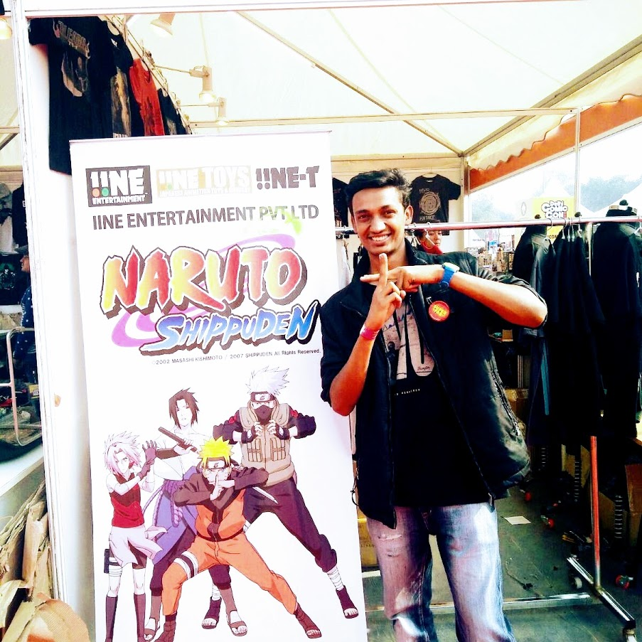
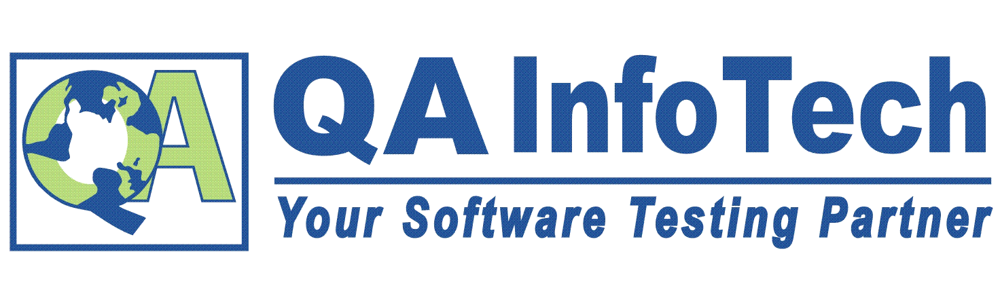
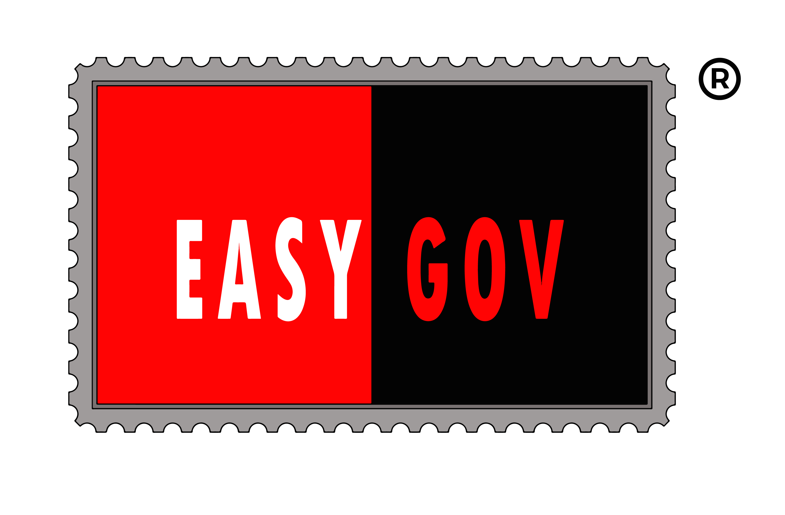

About Me
Let me tell you a few things...

BIO
I aspire to work in an environment demanding technical, programming , communication and functional expertise for facing and overcoming everyday challenges which require me to be up to date with the technology and continuously strive for enhancing my skills.
QA Infotech
Functional Tester
Worked as a functional tester on various projects. Experience in API Testing using Postman and SoapUI Tool. Also have experience in Automation testing using maven, Junit and BBD Cucumber.
Easygov
Half Developer
Worked on Frontend projects using ReactJS and backend using Django python. Working on Java spring framework using JPA, eclipselink and My Sql.